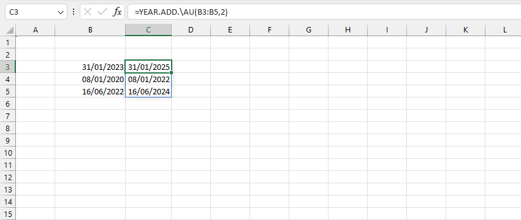

VD1: Tính ngày xuất phát sau 2 năm.
Lưu ý: nếu ngày chỉ định là ngày cuối cùng trong tháng thì kết quả trả về ngày cuối của tháng trước/sau N tháng.
Related function
DATE.ADD Trả về ngày tháng sau số ngày xác định (bỏ qua ngày lễ).
MONTH.ADD Trả về ngày tháng sau số tháng xác định (bảo toàn ngày).
CALENDAR Trả về lịch ngang một năm bất kỳ .
MODE Trả về phần tử lặp lại nhiều nhất trong mảng cho trước.
Return to Home